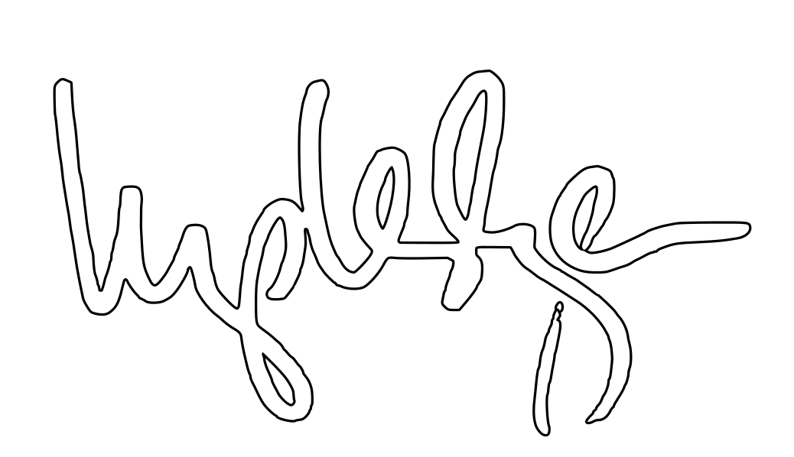

REPLACE ME — eyebrow
REPLACE ME — the event, two lines at most
REPLACE ME — the talk title, one line
REPLACE ME — date · venue

Most systems don’t fit the people who have to use them.
I find out why, build a better way through, and then explain it.